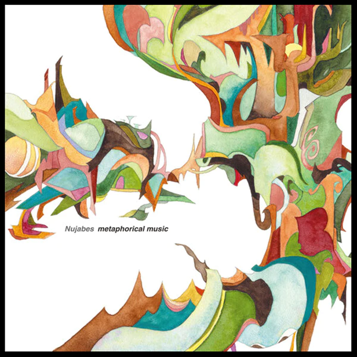

Metaphorical Music
Metaphorical Music est le premier album du DJ japonais Nujabes, sorti le 21 août 2003 sous le label Dimid Recordings. L'album a été enregistré et mixé au Park Avenue Studio puis il a été masterisé au Aubrite Mastering Studio.
Modal Soul
Modal Soul est le deuxième album complet de l'artiste hip-hop japonais Nujabes, sorti le 11 novembre 2005 sur son propre label Hydeout Productions. Comme son prédécesseur, Metaphorical Music, Modal Soul fusionne des rythmes jazzy et lisses avec le hip-hop.
Spiritual State
Spiritual State est le troisième et dernier album studio de Nujabes, publié à titre posthume pour faire suite à Modal Soul en 2005. L'album était incomplet à la mort de Nujabes en février 2010, ce qui a incité ses proches à le terminer.